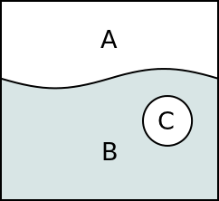

In my last blog post I've ranted about problems with implementing intrusive containers in C++.
The main problem is that to allow an object to be included into an intrusive container you have to modify the object itself, for example, add 'prev' and 'next' member variables to it. That in turn breaks the encapsulation principle. In rigorous object-oriented design the item is owned by the container, and thus the container should be aware of the item but not vice versa.
There have been a lot of discussion about the blog post both on this site and elsewhere but, unfortunately, participants focused on unrelated issues like whether list is an efficient data structure or whether objects as such rather than pointers should be stored in the non-intrusive list. The encapsulation issue went almost unnoticed and nobody have proposed any solution for it.
While I believe the encapsulation issue is a problem of design of C++ language and thus cannot be solved in C++, there seems to be a way to mitigate it. You cannot avoid adding 'prev' and 'next' pointers to the contained item, however you can prohibit the item to access these members and you can make them visible only to the container. To do that you can use a strange technique that I haven't seen being used so far, so I am taking liberty to call it "enclave pattern".
According to Wikipedia "An enclave is a territory entirely surrounded by another territory."

In the picture above, C is an eclave of A inside the teritory of B. Well-know real-world enclaves are, for example, Kaliningrad or Nagorno-Karabakh.
In the programming context we can create an enclave C of class A inside class B. The idea is that while instance of C is embedded inside of instance of B, its members are not accessible by B, only by A:
class A
{
public:
class C
{
friend class ::A;
private:
int i;
};
void fx ();
};
class B
{
public:
A::C c;
void fx ();
};
The unusual thing about the code snippet above is that class C is entirely private. It has no public members nor methods. In theory, it should be unusable. However, we are using 'friend' keyword to grant class A access to it.
Now, let's test the encapsulation:
void A::fx ()
{
B b;
// Following assignment compiles OK.
b.c.i = 0;
}
void B::fx ()
{
// Following assignment fails to compile:
// error: ‘int A::C::i’ is private
c.i = 0;
}
As can be seen, enclave C exists inide of B, however, it can be accessed only from the methods of A.
And here's an example of implementing an intrusive list using the enclave pattern:
class list
{
public:
class helper
{
friend class ::list;
private:
helper *prev;
helper *next;
};
void push_back (node *item)
{
mtx.lock ();
item->next = 0;
item->prev = last;
last = item;
mtx.unlock ();
}
private:
mutex mtx;
helper *first;
helper *last;
};
// This class can be contained in the list.
class person
{
public:
list::helper h;
int age;
int weight;
};
EDIT: The following example was added to the article post facto.
I've deliberately made the list implementation thread-safe to make the value of enclave pattern more obvious. The 'list' object contains a mutex that guards all the data fields belonging to the list. That is 'first' and 'last' members of the 'list' itself as well as 'prev' and 'next' fields that are the enclave of 'list' class inside 'person' class.
Now, imagine that implementer of 'person' class would accidentally mess with the 'next' pointer. As 'person' class exists outside of the list's critical section, it would lead to race conditions and undefined behaviour:
class person
{
public:
list::helper h;
int age;
int weight;
void be_evil ()
{
h.next = 0;
}
};
Fortunately, the 'enclave' pattern saves the day here. When trying to compile the above implementation of 'person' the compiler will report an error:
error: ‘list::node *list::node::next’ is private
It is entirely possible that this pattern was already described elsewhere and I believe it is new only thanks to sheer ignorance. If so, let me know and I'll add the appropriate citation to this article.
September 11th, 2012